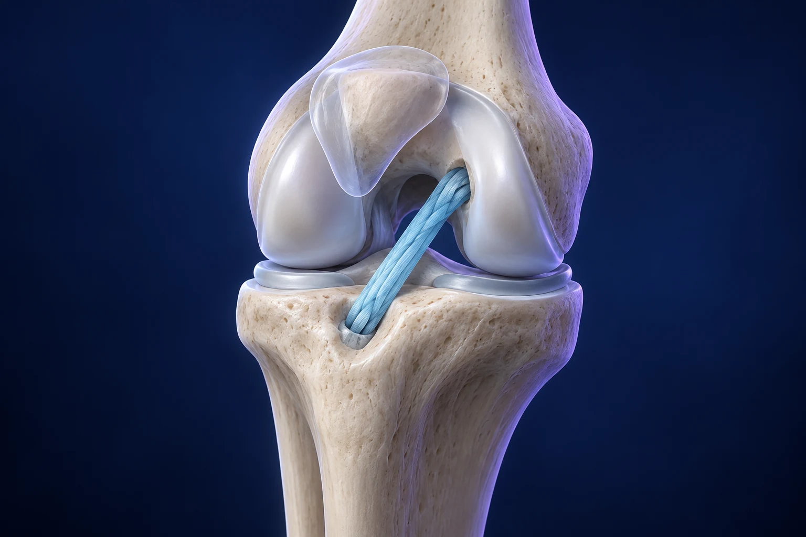

Ligamentoplastie du genou : comment reconstruit-on le ligament croisé antérieur ?

La ligamentoplastie du genou consiste le plus souvent à remplacer un ligament croisé antérieur rompu par un greffon tendineux. Son objectif est d’améliorer la stabilité du genou lorsque la situation justifie une intervention. Le choix du greffon, les éventuels gestes associés et la rééducation forment un même parcours : l’opération en est une étape, et la récupération se construit progressivement.
Après avoir abordé la question « Faut-il toujours opérer une rupture du LCA ? », intéressons-nous ici au déroulement de la reconstruction et aux questions à préparer pour votre consultation avec le Dr François Lozach.
Que remplace exactement la ligamentoplastie ?
Le ligament croisé antérieur, ou LCA, participe au contrôle des déplacements du tibia par rapport au fémur, notamment pendant les changements de direction. Imaginez un dispositif de guidage au centre du genou : lorsqu’il est lésé, certains mouvements peuvent donner une impression de dérobement. Cette image reste simplifiée, car les muscles, les ménisques et les autres ligaments contribuent aussi à la stabilité.
La reconstruction utilise un tendon pour créer un nouveau lien entre les deux os. Elle ne consiste généralement pas à simplement recoudre les extrémités du ligament rompu. Certaines réparations répondent à des indications particulières ; elles ne sont pas interchangeables avec une reconstruction. L’évaluation tient compte de votre instabilité, de vos activités et des lésions associées. AAOS, comprendre les traitements du LCA.
Quel tendon peut servir de greffon ?
Plusieurs prélèvements sont possibles : tendons ischio-jambiers, tendon rotulien ou tendon quadricipital. Lorsqu’il provient de votre propre corps, on parle d’autogreffe. Une greffe provenant d’un donneur est une allogreffe ; elle correspond à d’autres situations et ne présente pas les mêmes compromis, notamment chez les patients jeunes et sportifs.
Il n’existe pas un greffon idéal pour tout le monde. Le choix prend en compte le sport pratiqué, les contraintes professionnelles, les antécédents et les caractéristiques du genou. Les conséquences possibles du prélèvement, notamment une douleur à l’avant du genou ou lors de l’agenouillement selon la technique, font partie de la discussion. Demandez pourquoi une option vous est proposée plutôt qu’une autre. AAOS, recommandations sur les lésions du LCA.
Comment se déroule l’intervention ?
La reconstruction est habituellement réalisée avec une arthroscopie : une caméra introduite dans l’articulation permet de visualiser ses structures. Le greffon est positionné et fixé dans des tunnels osseux préparés au niveau du tibia et du fémur. Ces fixations maintiennent le greffon pendant son intégration ; elles ne signifient pas que le genou est immédiatement prêt pour tous les efforts.
Le mode d’anesthésie et les conditions de sortie sont définis avec l’équipe. Un parcours ambulatoire est possible dans certaines situations, avec une organisation adaptée au retour à domicile. Une lésion méniscale ou cartilagineuse peut nécessiter un geste complémentaire. Il est utile de savoir, avant l’opération, quelles adaptations seraient alors possibles. NHS, déroulement d’une reconstruction du LCA.
Pourquoi préparer le genou avant l’opération ?
Un genou moins gonflé, mobile et dont les muscles fonctionnent mieux facilite la préparation du parcours. Une rééducation préopératoire peut être proposée pour travailler les objectifs déterminés par l’équipe, en particulier la mobilité et l’activation musculaire. Le calendrier dépend aussi des autres lésions : il ne se résume pas à attendre une durée identique pour tous. West Suffolk NHS, conseils avant et après reconstruction du LCA.
Cette préparation est également pratique. Qui pourra vous accompagner ? Votre logement comporte-t-il des escaliers ? Votre travail impose-t-il de conduire, de porter des charges ou de vous agenouiller ? Apportez ces informations en consultation. Une consigne peut être médicalement claire tout en étant difficile à appliquer chez vous : mieux vaut en parler avant la sortie.
Pourquoi la rééducation reste-t-elle indispensable ?
La stabilité ne dépend pas seulement du greffon. Il faut retrouver une mobilité satisfaisante, de la force et un contrôle du membre inférieur. La progression associe plusieurs étapes, adaptées à l’examen et aux gestes réalisés. Une réparation méniscale associée peut modifier les consignes d’appui ou de flexion ; le programme d’une autre personne ne doit donc pas devenir votre référence. West Suffolk NHS, parcours de rééducation du LCA.
La reprise du sport se discute selon le temps écoulé et des critères fonctionnels. Marcher confortablement n’équivaut pas à pouvoir pivoter, sauter ou affronter un adversaire. Des évaluations de force et de fonction contribuent à la décision ; aucune date annoncée à distance ne peut garantir une reprise sûre. AAOS, recommandations et retour à l’activité.
Quels risques faut-il connaître ?
Une infection, une phlébite, une raideur, une douleur au site de prélèvement ou une instabilité persistante peuvent survenir. Le greffon peut également se rompre. Ces risques doivent être expliqués en fonction de votre situation, sans promettre un genou identique à celui d’avant la blessure. NHS, complications possibles.
Après l’intervention, contactez rapidement l’équipe en cas de fièvre, d’écoulement de la cicatrice, de douleur qui augmente nettement ou de mollet douloureux et gonflé. Une difficulté respiratoire soudaine ou une douleur thoracique justifie un appel urgent au 15 ou au 112. Vos documents de sortie précisent les contacts et les consignes adaptés à votre opération.
Pour préparer votre décision, retenez trois questions : quel bénéfice attendre dans mes activités, pourquoi ce greffon et quelles contraintes de rééducation prévoir ? Vous pouvez prendre rendez-vous avec le Dr François Lozach à Sète avec vos examens et vos objectifs personnels.
Ces conseils sont d’ordre général et ne remplacent pas un avis médical personnalisé.